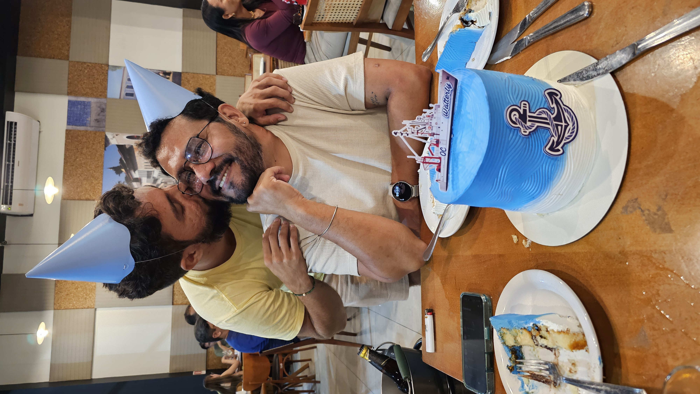

Primeiros capítulos
Quando o encontro virou destino
Nos achamos perdidos na Praça Deodoro. Entre olhares tímidos e conversamos um pouco. Depois, quando nos enconstramos pela segunda vez, das conversas que pareciam não querer terminar, nasceu uma conexão que mudou tudo com naturalidade.